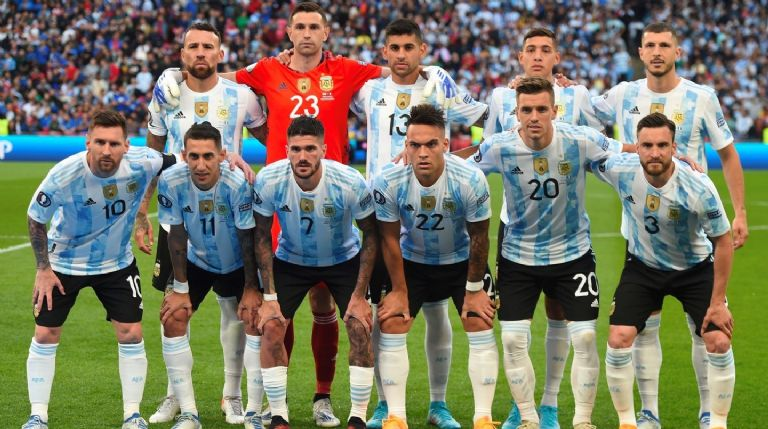

Ranking FIFA : 3° (octubre 2022).
¿Cómo se clasificó al Mundial? Fue 2° en las Eliminatorias sudamericanas.
Rendimiento en 2021 (G-E-P): 11-5-0 (29 GF, 9 GC, +20).
Rendimiento en 2022 : 7-1-0 (21 GF, 2 GC, +19).
Emiliano Martínez
Nahuel Molina
Cristian Romero
Nicolás Otamendi
Marcos Acuña
Ángel Di María
Rodrigo de Paul
Leandro Paredes
Giovani Lo Celso
Lionel Messi
Lautaro Martínez.
Nacionalidad : argentino.
Edad : 44 años.
Contratado : tras un interinato que comenzó el 2 de agosto de 2018, se oficializó en el puesto el 29 de noviembre de ese año.
Récord en el cargo (G-E-P): 32-13-4.
Títulos en el cargo : Copa América 2021.
Victoria más notable : 1-0 sobre Brasil, final de la Copa América 2021.
1930 Uruguay 2°
1934 Italia 9°
1938 Francia -
1950 Brasil -
1954 Suiza -
1958 Suecia 13°
1962 Chile 10°
1966 Inglaterra 5°
1970 México -
1974 Alemania 8°
1978 Argentina Campeón
1982 España 11°
1986 México Campeón
1990 Italia 2°
1994 Estados Unidos 10°
1998 Francia 6°
2002 Corea y Japón 18°
2006 Alemania 6°
2010 Sudáfrica 5°
2014 Brasil 2°
2018 Rusia 16°
